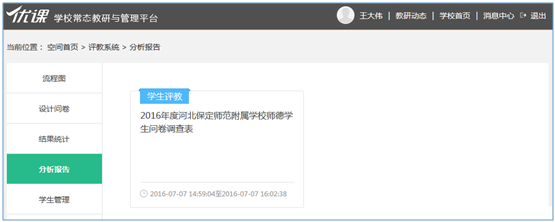
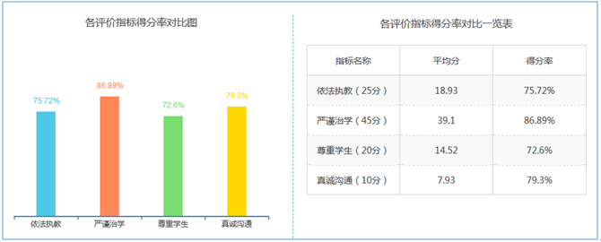
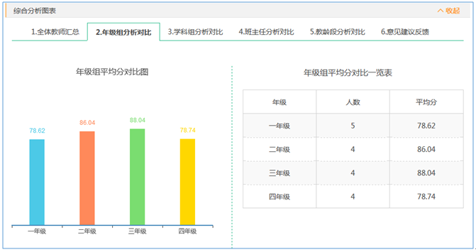
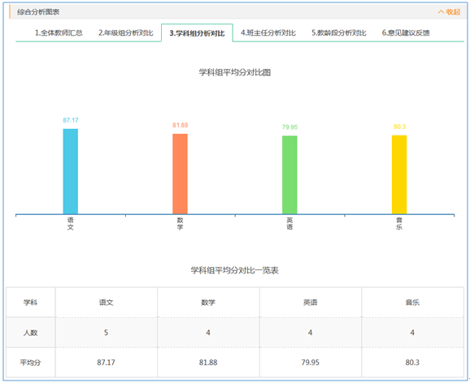
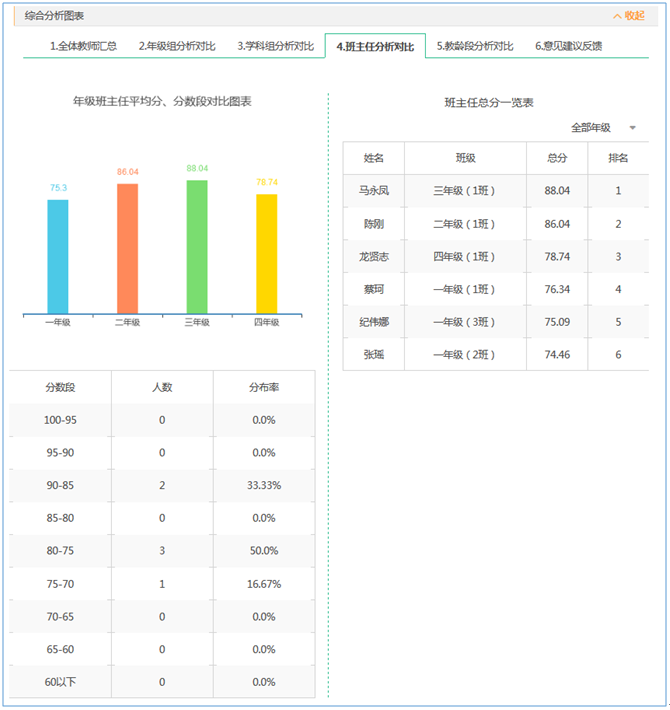
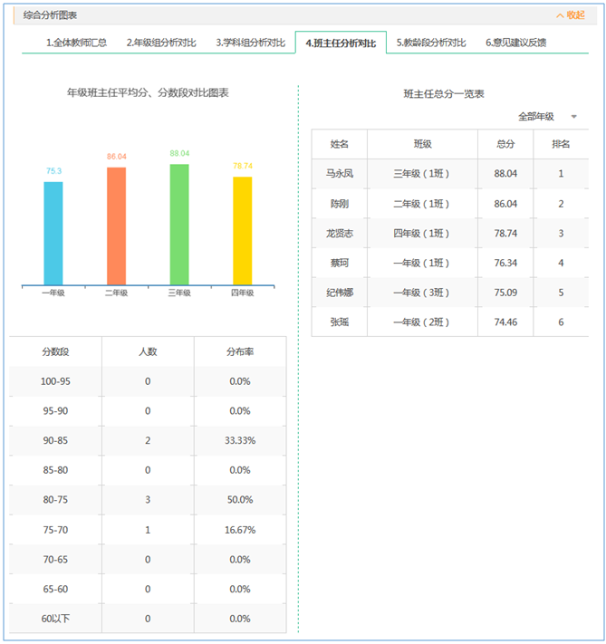
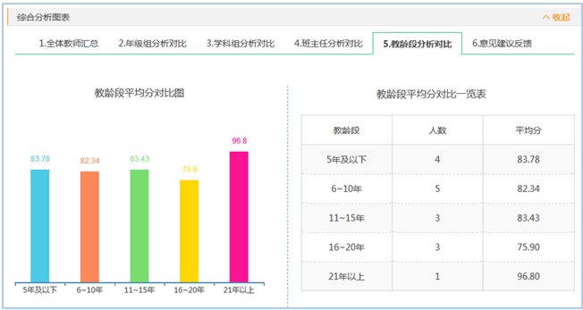
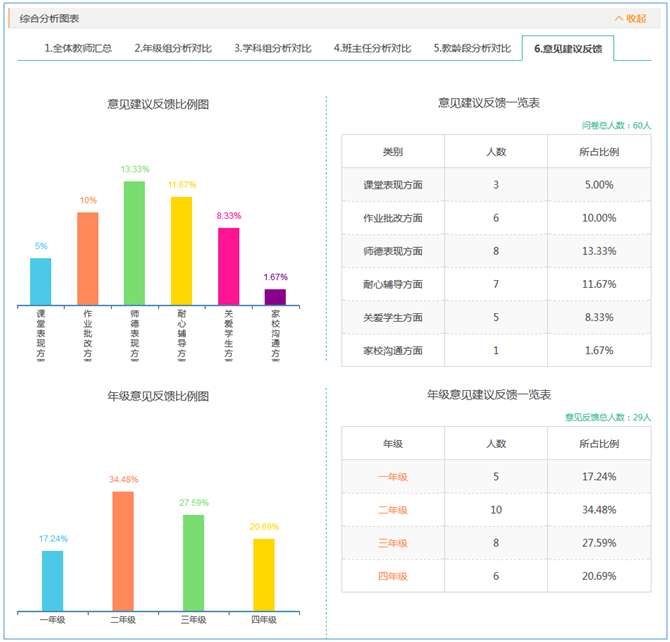
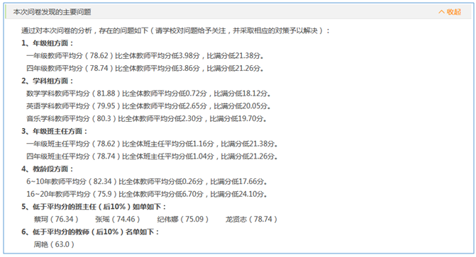

3.4.6 分析报告
用户可以在“分析报告”列表中查看已结束评教问卷的综合分析报告（如图3.4.6-1）。点击问卷后，跳转至相应问卷的分析报告页面（如图3.4.6-2），分析报告共包含问卷说明、问卷内容、问卷结果、综合分析图表和本次问卷发现的主要问题五项内容。
一、问卷说明：显示此问卷的问卷说明。
二、问卷内容：显示此问卷的问卷内容。
三、问卷结果：系统自动根据评教结果，按照比例将教师划分为“优秀、良好、合格、不合格”四个等级，用户也可点击“调整比例”按钮，对系统预置的比例进行调整。
四、综合分析图表：系统自动生成多维度的分析报告，共包含以下六个方面。
1、全体教师汇总
显示“问卷结果分布率图表”和“问卷结果一览表”，显示样式及规则与“结果统计”中一致。针对于评价方式为“对各二级指标进行评价和对各一级指标进行评价”的问卷，系统会显示出“各评价指标得分率对比图”和“各评价指标得分率对比一览表”（如图3.4.6-3）。各评价指标得分率对比图中，系统以柱形图的形式显示各指标的得分率。各评价指标得分率对比一览表中，系统以表格的形式显示各指标的得分及得分率。
2、年级组分析对比
显示“年级组平均分对比图”和“年级组平均分对比一览表”（如图3.4.6-4）。年级组平均分对比图中，系统以柱形图的形式显示各评教年级的平均分。年级组平均分对比一览表中，系统以表格的形式显示各评教年级的教师人数和平均分。
3、学科组分析对比
显示“学科组平均分对比图”和“学科组平均分对比一览表”（如图3.4.6-5）。学科组平均分对比图中，系统以柱形图的形式显示各评教学科的平均分。学科组平均分对比一览表中，系统以表格的形式显示各评教学科的教师人数和平均分。
4、班主任分析对比
显示“年级班主任平均分、分数段对比图表”和“班主任总分一览表”（如图3.4.6-6）。年级班主任平均分、分数段对比图表中，系统以柱形图的形式显示各评教年级班主任的平均分；系统以表格的形式按分数段显示班主任的人数及分布率。班主任总分一览表中，系统以表格的形式显示各评教班主任的姓名、班级、总分和排名。
点击班主任总分一览表右上角“全部年级”的搜索条件，选择某年级后，可查看相应年级各班主任的总分对比图和一览表（如图3.4.6-7）。某年级班主任总分对比图中，系统以柱形图的形式显示该年级各班班主任的总分。某年级班主任总分一览表中，系统以表格的形式显示该年级各班班主任的姓名、班级、总分和排名。
5、教龄段分析对比
显示“教龄段平均分对比图”和“教龄段平均分对比一览表”（如图3.4.6-8）。教龄段平均分对比图中，系统以柱形图的形式显示各教龄段的平均分。教龄段平均分对比一览表中，系统以表格的形式显示各教龄段的教师人数和平均分。
6、意见建议反馈
显示“意见建议反馈比例图”、“意见建议反馈一览表”、“年级意见反馈比例图”和“年级意见建议反馈一览表”（如图3.4.6-9），注：当此问卷未设置“收集类别”时，则此处不显示“意见建议反馈比例图”和“意见建议反馈一览表”。
意见建议反馈比例图中，系统以柱形图的形式显示各类别反馈问题所占的比例。意见建议反馈一览表中，系统以表格的形式显示各类别反馈问题的人数和所占比例。年级意见反馈比例图中，系统以柱形图的形式显示各年级反馈问题所占的比例。年级意见建议反馈一览表中，系统以表格的形式显示各年级反馈问题的人数和所占比例，点击年级列的某“年级”后，可查看相应年级学生或家长具体的反馈内容，如图3.4.6-10所示。
五、本次问卷发现的主要问题：从六个方面显示此问卷存在的问题（如图3.4.6-11）。
1、年级组方面：显示低于全体教师平均分的年级。
2、学科组方面：显示低于全体教师平均分的学科。
3、年级班主任方面：显示低于全体班主任平均分的年级班主任。
4、教龄段方面：显示低于全体教师平均分的教龄段。
5、低于平均分的班主任（后10%）如单：显示低于全体班主任平均分后10%的班主任名单及分数。
6、低于平均分的教师（后10%）如单：显示低于全体教师平均分后10%的教师名单及分数。